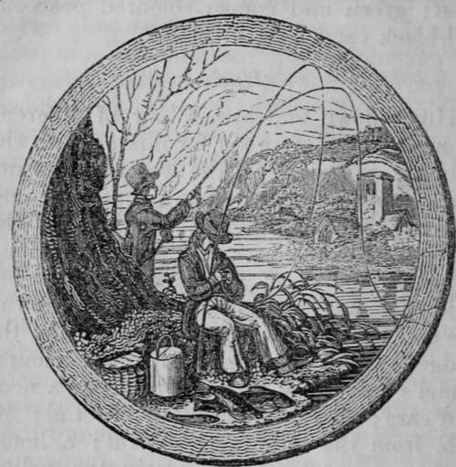

A Description Of The Fishes. Salmon
Description
This section is from the book "The Art Of Angling Greatly Improved", by An Unknown Author. Also available from Amazon: The Art of Angling Greatly Improved.
A Description Of The Fishes. Salmon
The Salmon is a fish of much strength and delicacy, and claims the preference before all other fish. It delights in rivers which have alpine sources, preferring to all others a gravelly-pebbled bottom, where there are large stones clear of every kind of slime. It is impatient of shade, unless in the very heat of summer, and dislikes to remain for any length of time in such parts of rivers where the banks are wooded, or near hanging rocks, that exclude the sun from the stream or pool. They always lie with their heads pointing up the river, and seldom or never swim down the stream, unless in their journeying to the sea, when disturbed by the hauling or shooting of nets, the prowling of the otter, or when exhausted by the fatiguing tackle of the angler.
A Salmon rod is generally proportioned to the size of the river which the angler frequents, but it ought not to be less than fifteen feet in length. The reel ought to be large enough to contain eighty or ninety yards, so as to admit of abundance of line to be given out when required; for many fish, when struck, run out to a great distance, and with such great rapidity, as to prevent the possibility of the angler's moving in the proper direction with sufficient quickness.
The best baits for Salmon are the artificial fly and the lob-worm; it is of little consequence what colour the fly is, provided it be large and gaudy, ribbed with gold or silver twist. The best times for angling for Salmon are in the morning from nine to eleven, and in an evening from six to sunset, especially when there is a moderate breeze upon the water. The method of fishing with a lob-worm is as follows: Take a worm thai has been well scoured, and run the hook through the middle, drawing it above the shank; then take another and bait the hook in the usual way, by putting it into the worm about an inch below the tail, drawing it on the hook about three fourths of the length, the head of the worm being at the point of the hook; then draw the first worm down to the other, for Salmon are partial to a large bait. It will be necessary to have a piece of lead, with a small hole through it, fastened upon the line, about two feet above the hook, by which means the bait can be kept in any certain place; when the bait has remained for a few minutes, draw it gently up the stream about a yard, and let the lead rest again at the bottom. This will excite the attention of the fish, and frequently tempts him to take the bait. Lines of silk or hemp are proper, and three silk-worm guts twisted together make an excellent bottom link. For the purpose choose three of equal strength, round, and free from flaws, and tying the root ends together, let them soak in water for twelve hours ; then make double knots on the loose ends, to hang on the hooks of the twisting-engine; do not twist them too hard ; the angler ought to have several of these links for various sized hooks, and in cases of accident. In angling for Salmon with a bait, the line must be stronger than what is used with the artificial fly; the top joint of the rod must also be stronger. If the lob-worm prove unsuccessful, a small live fish, a Gudgeon or Minnow, may be tried, and in all probability the Salmon will snap at him, for he is a fish of prey, and will feed upon those that are small.
The Salmon flies are generally made according to fancy ; the six following will be found worthy of notice :
1. The body made of peacock's harl, and a mealy grey cock's hackle over it.
2. The body made of silver twist, and a small dun hackle.
3. The body of yellow camlet, ribbed with gold twist, and a ginger hackle over it.
4. The body made of equal quantities of the fur of a hare's neck and orange-coloured mohair, with the hackle from a grouse's back.
5. Gold-twist body, and a dark red cock's hackle over it.
6. The body of peacock's harl, with the bright stained red hackle over it.
When the Salmon rises at the fly, give a gentle jerk, for the purpose of hooking him, which being accomplished, humour him in letting him run which ever way he will. Do not check him, lest he should break the line from the rod, and wind it up as fast as he returns, otherwise he will entangle and break the tackle. Keep him so tight, that he may bend the rod considerably, for if he be allowed to straighten the rod, he will soon make his escape. As he swims away follow him gently, but do not come within sight of him. He will be apt to spring or leap out of the water, at such time allow him line enough, and when it is perceived that he lies at the bottom, have patience for a time, and be not surprised if he repeats the stratagem, for he will strive to break from the hook. Having waited for the space of six or seven minutes, draw the line rather tight, and if he runs, then give him the same liberty as before. When he is thoroughly tired, draw him gently to the shore, where you see the most convenient place for landing him.
The facetious author of the Maxims for an Angler says, "Never mind what they of the old school say about ' playing him till he is tired.' Much valuable time and many a good fish may be lost by this antiquated proceeding. Put him into your basket as -soon as you can. Every thing depends upon the manner in which you commence your acquaintance with him. If you can at first prevail upon him to walk a little way down the stream with you, you will have no difficulty afterwards in persuading him to let you have the pleasure of seeing him at dinner".
Continue to: